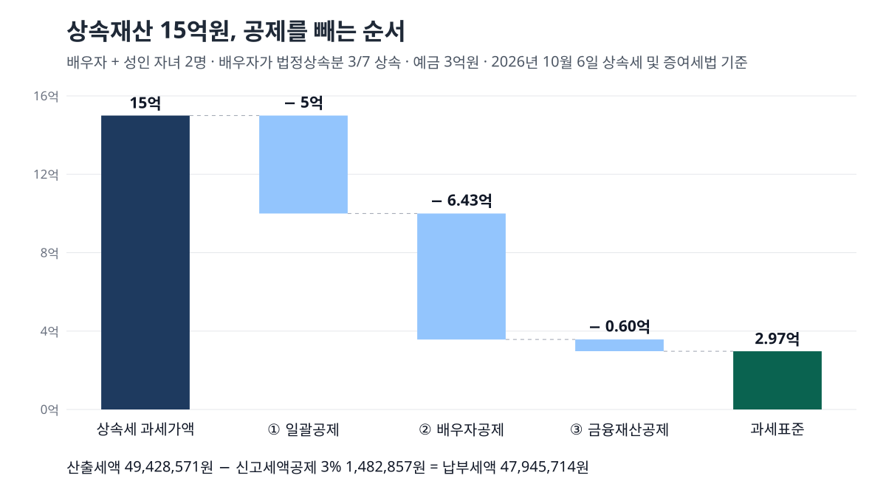
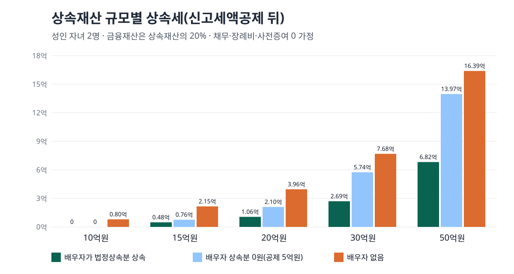

상속세 공제는 일괄공제 5억원(또는 기초+인적공제 중 큰 쪽)에 배우자공제 5억~30억원, 금융재산공제 최대 2억원을 더합니다. 배우자와 성인 자녀 둘이 15억원을 물려받으면 신고 뒤 세금은 4,794만원입니다.
숫자는 2026년 10월 6일 국가법령정보센터에 올라 있는 상속세 및 증여세법 조문 원문 기준이며, 이 법의 현행판은 2025년 10월 1일 시행본(법률 제21065호)입니다. 국회에서 논의 중인 개정안은 넣지 않았습니다.
공제가 여럿이라 헷갈리지만, 법은 더하는 순서와 상한을 정해 두었습니다. 아래에서 그 순서대로 가족 구성별 공제액과 상속재산 규모별 세금을 직접 계산했습니다.
목차
먼저 용어 두 개를 정리합니다. 상속세 과세가액은 물려받은 재산에서 채무·장례비용 같은 것을 빼고, 10년 안에 상속인에게 미리 준 재산을 다시 더한 금액입니다(제13조). 과세표준은 이 과세가액에서 공제를 모두 뺀, 세율을 곱하는 바탕 금액입니다.
공제는 다음 순서로 더합니다.
한도 안에서 남은 금액이 과세표준이고, 여기에 제26조의 10~50% 세율을 곱합니다. 세율 구간과 누진공제(구간마다 세율 차이를 바로잡으려고 빼 주는 고정액)는 증여세와 같아서, 혼인 증여공제를 금액별로 계산한 글에 정리해 둔 표를 그대로 쓰면 됩니다.
둘 중 큰 쪽을 받습니다. 제21조 제1항은 기초공제와 그 밖의 인적공제를 합친 금액과 5억원 중 큰 금액을 공제한다고 적고 있습니다.
인적공제의 금액은 제20조에 있습니다. 자녀는 1명에 5천만원, 미성년자는 19세가 될 때까지 남은 해마다 1천만원, 65세 이상 동거가족은 1명에 5천만원입니다. 미성년 자녀는 자녀공제와 미성년자공제를 겹쳐 받고, 남은 기간이 1년이 안 되면 1년으로 셉니다.
| 가족 구성 | 기초공제 | 그 밖의 인적공제 | 둘의 합 | 실제 공제(큰 쪽) |
|---|---|---|---|---|
| 성인 자녀 2명 | 2억원 | 1억원 | 3억원 | 5억원 |
| 성인 자녀 1명 + 12세 자녀 1명 | 2억원 | 1억 7,000만원 | 3억 7,000만원 | 5억원 |
| 자녀 3명 + 65세 이상 동거 부모 1명 | 2억원 | 2억원 | 4억원 | 5억원 |
| 자녀 4명 중 5세·8세 미성년 2명 | 2억원 | 4억 5,000만원 | 6억 5,000만원 | 6억 5,000만원 |
위 표의 넷째 줄처럼 어린 자녀가 많을 때만 5억원을 넘습니다. 5세 자녀는 14년 × 1천만원 = 1억 4,000만원, 8세 자녀는 11년 × 1천만원 = 1억 1,000만원이 자녀공제 5천만원 위에 붙습니다. 대부분의 가정은 5억원을 받는다고 보면 됩니다.
최소 5억원, 최대 30억원입니다. 제19조 제4항은 배우자가 실제로 받은 금액이 없거나 5억원 미만이어도 5억원을 공제합니다. 5억원을 넘게 받았다면 실제로 받은 금액을 공제하되, 두 상한 중 작은 쪽에서 멈춥니다.
법정상속분은 유언이 없을 때 법이 정한 몫입니다. 민법 제1009조는 자녀끼리는 똑같이 나누고, 배우자에게는 자녀 몫의 5할을 더 줍니다. 배우자와 자녀 둘이면 1.5 : 1 : 1이라 배우자 몫은 7분의 3, 자녀는 각 7분의 2입니다.
여기서 「실제로 받은」은 등기·명의개서까지 끝난 재산을 말합니다. 제19조 제2항은 상속세 신고기한 다음 날부터 9개월이 되는 날까지 배우자 몫을 나누고 그 사실을 세무서에 신고해야 실제 금액 공제를 인정합니다. 이 기한을 넘기면 받는 공제는 5억원입니다.
배우자가 법정상속분대로 받으면 4,794만원입니다. 가정은 이렇습니다. 상속재산은 아파트 12억원과 예금 3억원, 상속인은 배우자와 성인 자녀 2명, 채무·장례비용·10년 안 사전증여는 0원, 동거주택 공제 요건은 해당하지 않습니다.
| 단계 | 배우자가 법정상속분 상속 | 배우자 상속분 0원 | 배우자 없음 |
|---|---|---|---|
| 상속세 과세가액 | 1,500,000,000원 | 1,500,000,000원 | 1,500,000,000원 |
| 일괄공제 | 500,000,000원 | 500,000,000원 | 500,000,000원 |
| 배우자공제 | 642,857,142원 | 500,000,000원 | 0원 |
| 금융재산공제 | 60,000,000원 | 60,000,000원 | 60,000,000원 |
| 공제합계 | 1,202,857,142원 | 1,060,000,000원 | 560,000,000원 |
| 과세표준 | 297,142,858원 | 440,000,000원 | 940,000,000원 |
| 산출세액 | 49,428,571원 | 78,000,000원 | 222,000,000원 |
| 신고세액공제 | 1,482,857원 | 2,340,000원 | 6,660,000원 |
| 납부세액 | 47,945,714원 | 75,660,000원 | 215,340,000원 |

첫째 칸의 배우자 몫은 15억원 × 7분의 3 = 642,857,142원입니다. 5억원보다 크고 30억원보다 작으니 이 금액이 그대로 공제됩니다. 과세표준 297,142,858원은 1억원 초과 5억원 이하 구간이라 20%를 곱하고 누진공제 1천만원을 빼면 산출세액 49,428,571원이 나옵니다. 기한 안에 신고하면 제69조의 신고세액공제 3%가 빠져 47,945,714원이 남습니다. 상속인 세 사람이 똑같이 나눠 낸다면 한 사람에 약 1,598만원입니다.
배우자가 한 푼도 받지 않아도 배우자공제 5억원은 남기 때문에 세금은 7,566만원에서 멈춥니다. 같은 재산이라도 배우자가 없으면 공제가 5억 6,000만원뿐이라 2억 1,534만원으로 뛰어오릅니다. 배우자가 받은 재산은 훗날 그 배우자가 사망할 때 다시 그 사람의 상속재산이 된다는 점은 이 표에 들어 있지 않습니다.
같은 가족 구성(성인 자녀 2명)에 금융재산을 상속재산의 5분의 1로 두고 규모만 바꿔 계산했습니다.
| 상속재산 | 배우자가 법정상속분 상속 | 배우자 상속분 0원 | 배우자 없음 |
|---|---|---|---|
| 10억원 | 0원 | 0원 | 79,540,000원 |
| 15억원 | 47,945,714원 | 75,660,000원 | 215,340,000원 |
| 20억원 | 105,591,428원 | 209,520,000원 | 395,760,000원 |
| 30억원 | 269,382,858원 | 574,240,000원 | 768,240,000원 |
| 50억원 | 681,771,429원 | 1,396,800,000원 | 1,639,300,000원 |

배우자와 자녀가 함께 있는 가정이라면 10억원까지는 일괄공제 5억원과 배우자공제 5억원만으로 과세가액이 모두 덮여 세금이 0원입니다. 50억원에서도 배우자 법정상속분은 약 21억 4,285만원이라 30억원 상한에 닿지 않습니다. 배우자 몫이 30억원을 넘기려면 이 가족 구성에서는 상속재산이 70억원을 넘어야 합니다. 상속재산 규모가 우리나라 가구 분포에서 어디쯤인지는 순자산 상위 10% 기준선을 계산한 글의 통계청 숫자와 나란히 놓고 보면 짐작할 수 있습니다.
금융재산 상속공제는 제22조에 있습니다. 예금·적금·주식 같은 금융재산에서 금융채무를 뺀 순금융재산이 2천만원 이하면 전액, 2천만원을 넘으면 20%와 2천만원 중 큰 금액을 빼고 2억원에서 멈춥니다. 그래서 순금융재산 1억원까지는 2천만원, 10억원부터는 2억원으로 고정됩니다. 최대주주가 가진 주식과 신고기한까지 신고하지 않은 남의 이름 금융재산은 빠집니다.
동거주택 상속공제는 제23조의2의 세 조건을 모두 갖춰야 붙습니다.
공제액은 주택가액(집에 담보된 부모의 채무를 뺀 금액)의 100%, 6억원 한도입니다. 배우자가 받는 집에는 붙지 않습니다. 가업상속공제는 10년 이상 경영한 중소·중견기업에만 해당하며, 국세청 안내 기준으로 경영 기간에 따라 300억~600억원 한도입니다.
세 가지 경우가 있습니다.
첫째, 공제 합계에는 천장이 있습니다. 제24조는 상속인이 아닌 사람에게 유증한 재산, 선순위 상속인이 포기해 다음 순위가 받은 재산, 과세가액에 더한 사전증여재산(증여공제 뒤 금액)을 과세가액에서 뺀 만큼만 공제합니다. 사전증여재산은 과세가액이 5억원을 넘을 때만 뺍니다. 예를 들어 과세가액 8억원 가운데 5억원이 3년 전 자녀에게 준 돈이고 증여공제가 5천만원이었다면, 공제 한도는 8억원 − 4억 5,000만원 = 3억 5,000만원입니다. 일괄공제와 배우자공제가 10억원이어도 3억 5,000만원까지만 들어갑니다.
둘째, 신고하지 않으면 제21조 제1항 단서에 따라 공제는 5억원으로 고정됩니다. 위 표 첫째 줄처럼 어린 자녀가 많아 기초+인적공제가 6억 5,000만원인 가정이라면 1억 5,000만원을 덜 공제받는 셈입니다.
셋째, 배우자 혼자 상속받으면 일괄공제가 없습니다. 같은 조 제2항은 이때 기초공제와 인적공제의 합으로만 공제한다고 적고 있습니다. 자녀와 부모가 없어 배우자가 단독 상속인이면 기초공제 2억원에 배우자공제가 더해지는 구조입니다.
제67조 제1항에 따라 사망일이 든 달의 말일부터 6개월 안에 피상속인의 주소지 관할 세무서에 신고합니다. 해외에 주소를 둔 경우는 9개월입니다. 국세청 상속세 신고시 유의사항은 기한 마지막 날이 토요일·공휴일이면 다음 날까지로 보고, 홈택스에서 신고/납부 → 세금신고 → 상속세 순서로 전자신고를 할 수 있다고 안내합니다. 같은 홈택스의 세금모의계산 메뉴에는 상속세 자동계산이 있습니다.
사망일을 2026년 11월 20일로 두고 날짜를 세어 보면 이렇습니다.
| 할 일 | 마감일 | 근거 |
|---|---|---|
| 상속세 신고·납부 | 2027년 5월 31일(월) | 제67조 제1항 |
| 사전증여재산 결정정보 제공 신청 | 2027년 5월 17일(월) | 국세청 신고시 유의사항(만료 14일 전) |
| 배우자 몫 분할·신고 | 2028년 2월 29일(화) | 제19조 제2항(신고기한 다음 날부터 9개월) |
둘째 줄은 10년 안에 부모가 자녀에게 준 돈을 상속인이 다 알기 어려울 때 쓰는 길입니다. 상속인 전원의 동의를 받은 상속인 1명이 신청하면 세무서가 이미 결정된 사전증여 내역을 홈택스로 보여 주고, 접수 뒤 7일 안에 문자로 알립니다.
셋째 줄의 9개월은 제19조 제2항 본문의 글자입니다. 2026년 10월 6일 같은 날 국세청 상속공제 항목별 설명 화면은 이 기한을 「신고기한의 다음날부터 6개월」로 적고 있어 조문과 다릅니다. 6개월로 세면 마감이 2027년 11월 30일이 되어 석 달 빠르게 잡히니, 날짜는 조문 기준으로 셌습니다.
2026년 10월 6일 국가법령정보센터에서 상속세 및 증여세법 제13조·제18조·제19조·제20조·제21조·제22조·제23조의2·제24조·제25조·제26조·제67조·제69조와 민법 제1009조의 조문 본문을 하나씩 열어 금액과 문구를 옮겼습니다. 같은 날 국세청 상속세 화면 세 곳(세액계산흐름도, 신고시 유의사항, 상속공제 항목별 설명)을 열어 누진공제액, 배우자공제 한도 산식, 신고 경로를 맞춰 봤습니다. 위 표의 금액은 이 조문 공식을 옮긴 파이썬 계산으로 원 미만을 버려 다시 돌렸고, 감정평가수수료와 세대를 건너뛴 상속의 할증은 넣지 않았습니다.
이 글은 기준일의 공개 원문을 정리한 일반 정보이며, 개인의 사정에 따라 결과가 달라질 수 있습니다.